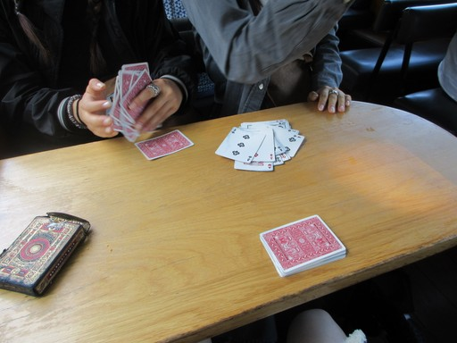
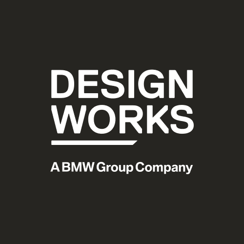
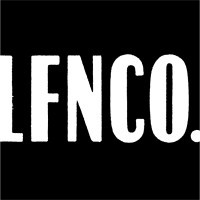
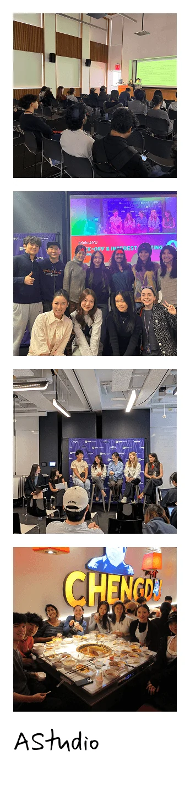
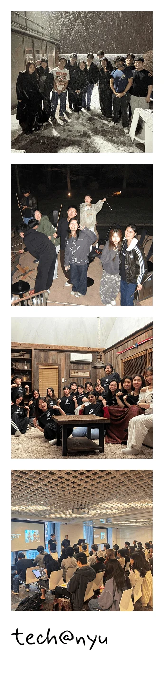
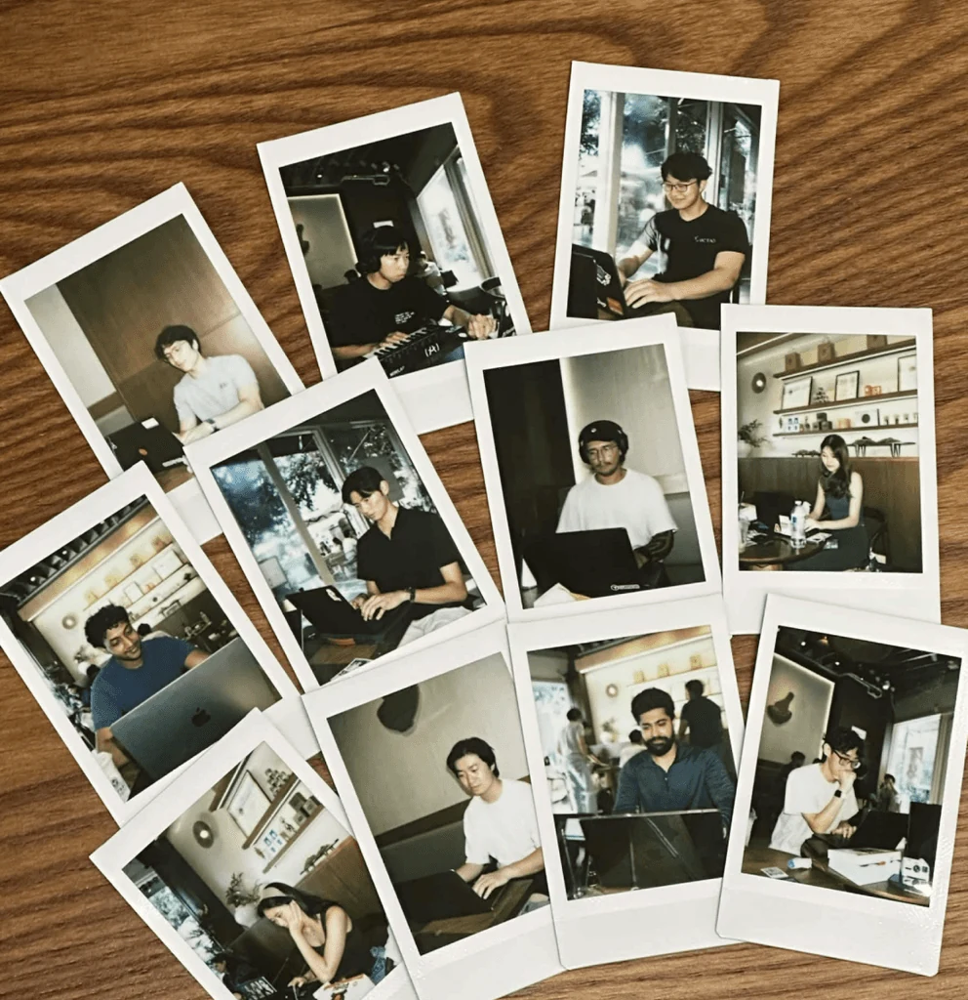
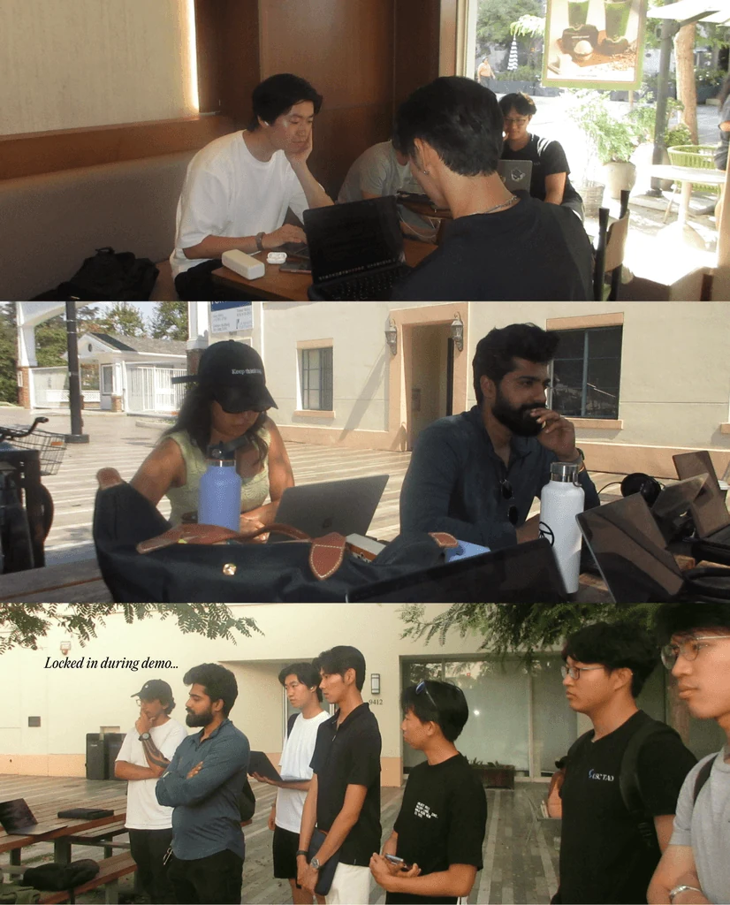
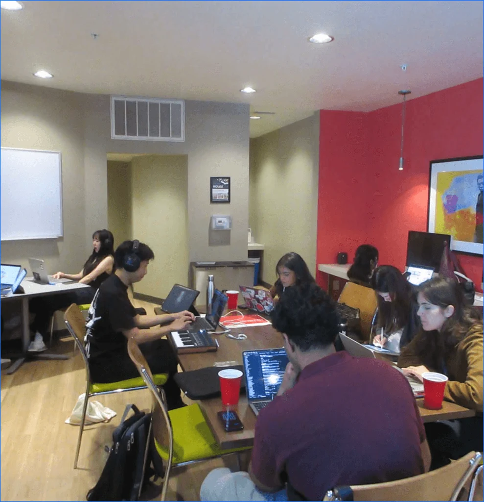
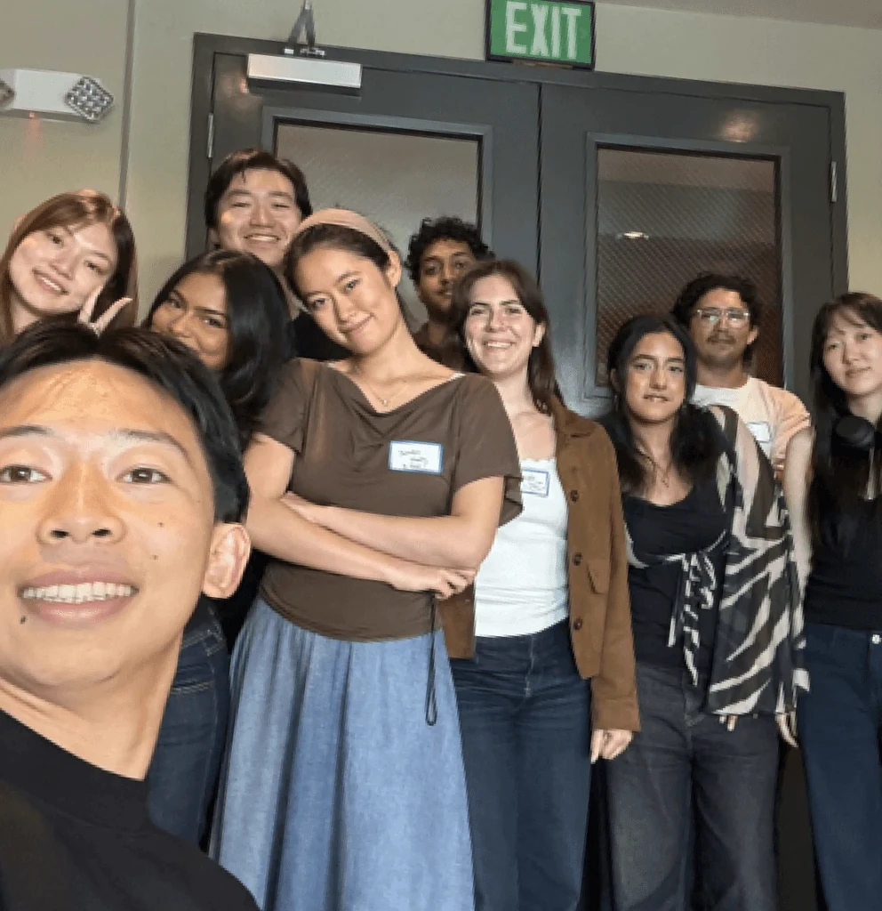

About me
Hi! I'm Jennifer/HFYJ. I’m a designer who treats all my works like playing with cards.
BUT WHY CARDS?
Playing cards seem to capture me as a designer: Intentionality, resourcefulness, playfulness, the desire to challenge, and community building.
When I was a kid, I used to play a Chinese card game called “Dou Di Zhu” (Fight the Landlord) with my dad, my mom and my sister. It was a game of strategy, resourcefulness, creativity, and just a little bit of luck. More importantly, it taught me that moments like these can bring people together.
It shaped the designer I want to become: a strategist, thinker, creative, and out-of-the-box problem solver, but also a community builder who brings talented people together and inspires them to create alongside one another.

EXPERIENCE
-
Summer 2026

BMW Designwork Interactions Intern - Summer 2026 Develop for Good Design Manager Designer - Summer 2025
- 2025-2026 Mirror Physics Product Design Intern
- 2025-2026 NYU Entrepreneurial Institute Design Intern
-
Summer 2025

LFNCO/FF Experience Design Intern
EDUCATION
- 2024-2028 New York University B.F.A Interactive Media Arts
- 2020-2024 Sage Hill School High School
MY PEOPLE
A big part of who I am comes from my communities.
I am grateful to be able to surround myself with talented designers, builders, creatives, and people who are passionate about what they do!


TECH@NYU
NYU's oldest, largest, and premier student org for all things tech related.
From dev team member to marketing director and President, I had the pleasure of working with the best team to build THE tech community @ NYU!
AStudio
NYU Tisch's design club connecting students with design opportunities
What began as an Adobe Student Ambassador club grew into a community centered on all things design. As co-founder and president, I was grateful to be able to watch it evolve into a creative hub at NYU.
And this summer I got to help cohost Sundays in LA!
Sundays is a coworking space/collaboration between UCLA & USC
Got to meet some of the coolest people ever. Was so inspired everyday to keep making cool things :)




FAQ
-
HFYJ are the initials of my Chinese name, Huang Fang Yi Jing(黄方漪婧). I carry my Chinese heritage and culture with me, even in my designs!
-
I created everything from watercolor to color pencil, charcoal, and graphite, but my favorite medium will always be oil painting. Check out the sketchbook page to learn more!
-
I like playing classical guitar, doing hip hop dance with friends, trying matcha places and good food around NYC.
SOME CLASSICAL GUITAR I'VE BEEN PRACTICING
Andante Largo, Op. 5, No.5 by Fernando Sor
Hear a section of it below!